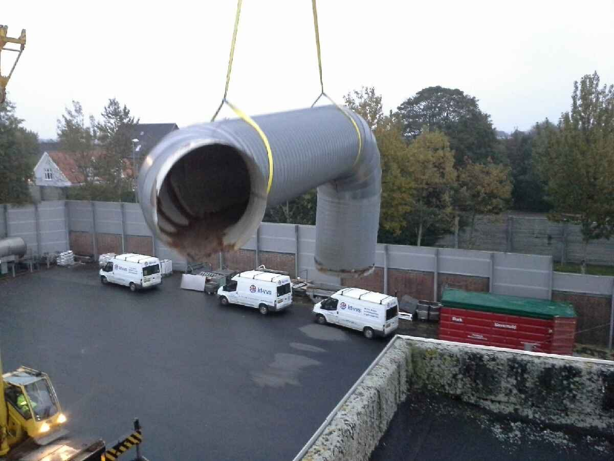
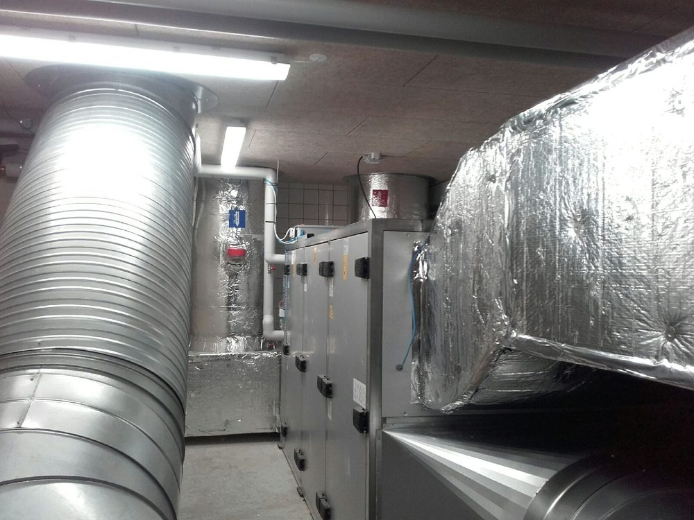
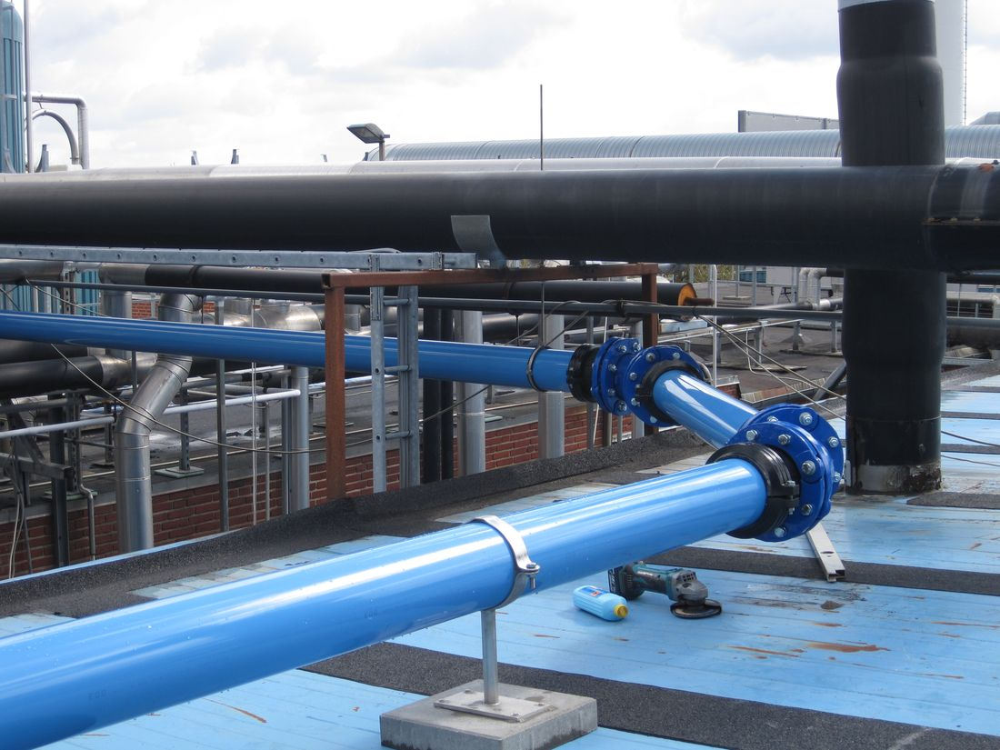
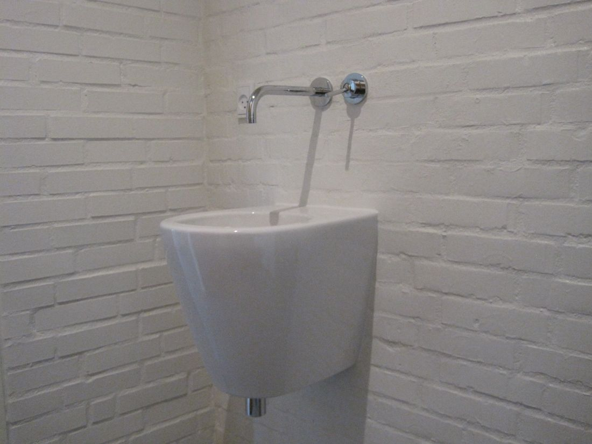

Aut. VVS-installatør · Platanvej, Herning
Fra badeværelser til 11.500 m³/h ventilation.
Ventilation til Herning Kommune. Trykluft til industrien. Badeværelse hos naboen. Det er de samme håndværkere, der kører ud til det hele.
1963Grundlagt i Herning
32Navngivne projekter
11.500m³/h, største anlæg
Herning Kommune · Danish Crown · Herning Vand · CEU Herning




